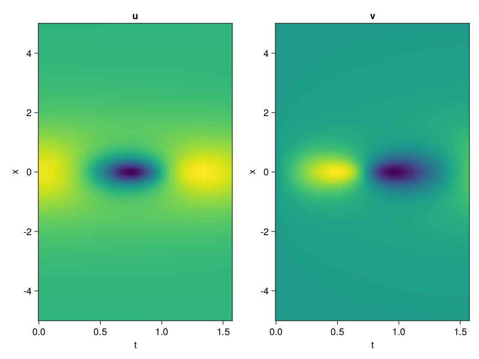
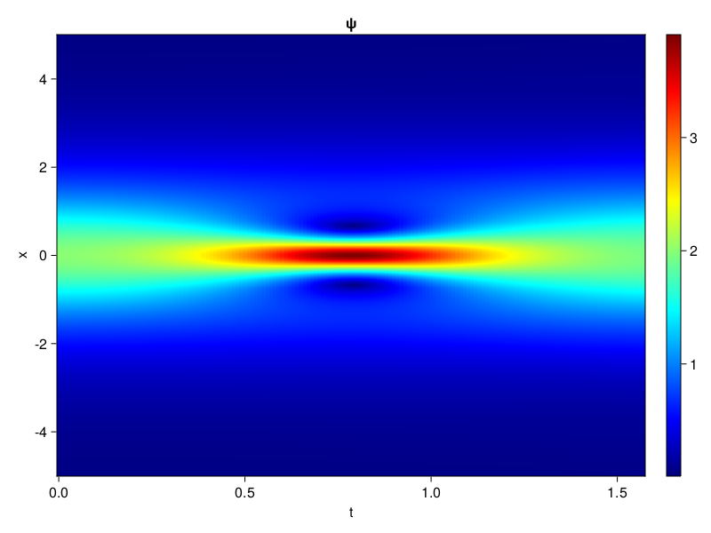
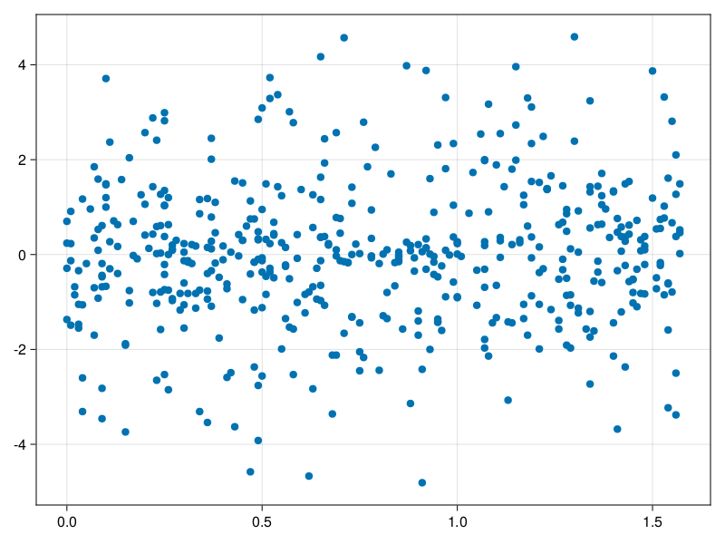

Schrödinger equation
The nonlinear Shrödinger equation is given by
\[\mathrm{i} \partial_t \psi=-\frac{1}{2} \sigma \partial_{x x} \psi-\beta|\psi|^2 \psi\]
Let $\sigma=\beta=1, \psi=u+v i$, the equation can be transformed into a system of partial differential equations
using ModelingToolkit, IntervalSets, Sophon, CairoMakie
using Optimization, OptimizationOptimJL
@parameters x,t
@variables u(..), v(..)
Dₜ = Differential(t)
Dₓ² = Differential(x)^2
eqs=[Dₜ(u(x,t)) ~ -Dₓ²(v(x,t))/2 - (abs2(v(x,t)) + abs2(u(x,t))) * v(x,t),
Dₜ(v(x,t)) ~ Dₓ²(u(x,t))/2 + (abs2(v(x,t)) + abs2(u(x,t))) * u(x,t)]
bcs = [u(x, 0.0) ~ 2sech(x),
v(x, 0.0) ~ 0.0,
u(-5.0, t) ~ u(5.0, t),
v(-5.0, t) ~ v(5.0, t)]
domains = [x ∈ Interval(-5.0, 5.0),
t ∈ Interval(0.0, π/2)]
@named pde_system = PDESystem(eqs, bcs, domains, [x,t], [u(x,t),v(x,t)])\[ \begin{align} \frac{\mathrm{d}}{\mathrm{d}t} u\left( x, t \right) =& - \frac{1}{2} \frac{\mathrm{d}}{\mathrm{d}x} \frac{\mathrm{d}}{\mathrm{d}x} v\left( x, t \right) - \left( \left|u\left( x, t \right)\right|^{2} + \left|v\left( x, t \right)\right|^{2} \right) v\left( x, t \right) \\ \frac{\mathrm{d}}{\mathrm{d}t} v\left( x, t \right) =& \frac{1}{2} \frac{\mathrm{d}}{\mathrm{d}x} \frac{\mathrm{d}}{\mathrm{d}x} u\left( x, t \right) + \left( \left|u\left( x, t \right)\right|^{2} + \left|v\left( x, t \right)\right|^{2} \right) u\left( x, t \right) \end{align} \]
pinn = PINN(u = Siren(2,1; hidden_dims=16,num_layers=4, omega = 1.0),
v = Siren(2,1; hidden_dims=16,num_layers=4, omega = 1.0))
sampler = QuasiRandomSampler(500, (200,200,20,20))
strategy = NonAdaptiveTraining(1,(10,10,1,1))
prob = Sophon.discretize(pde_system, pinn, sampler, strategy)OptimizationProblem. In-place: true
u0: ComponentVector{Float64}(u = (layer_1 = (weight = [0.1682823896408081 -0.0687568187713623; 0.4779740571975708 0.48082876205444336; … ; -0.07348597049713135 -0.2404685616493225; -0.2203332781791687 -0.09312933683395386], bias = [0.0; 0.0; … ; 0.0; 0.0;;]), layer_2 = (weight = [0.463689923286438 0.5346437692642212 … -0.2258637696504593 -0.5148987174034119; 0.3762141764163971 -0.2198033481836319 … -0.052174173295497894 -0.5344640016555786; … ; -0.42319101095199585 -0.08322989195585251 … -0.2337866574525833 0.08875763416290283; -0.5004404783248901 0.5934109687805176 … -0.5087862610816956 -0.1461498737335205], bias = [0.0; 0.0; … ; 0.0; 0.0;;]), layer_3 = (weight = [-0.07606131583452225 -0.385288268327713 … -0.13080663979053497 -0.21886791288852692; 0.19343389570713043 0.24766843020915985 … -0.5754173398017883 0.4407479166984558; … ; 0.023781366646289825 0.18713045120239258 … -0.40787214040756226 0.10939683765172958; -0.35767796635627747 0.10272371768951416 … 0.2634650766849518 0.5728859305381775], bias = [0.0; 0.0; … ; 0.0; 0.0;;]), layer_4 = (weight = [0.13554400205612183 0.2088634967803955 … -0.5052553415298462 0.5309568047523499; -0.4005781412124634 -0.5078895092010498 … -0.3014170825481415 0.1772831231355667; … ; 0.29886394739151 -0.5864046812057495 … 0.5558088421821594 -0.3983549177646637; -0.30289825797080994 0.20021666586399078 … 0.19091348350048065 0.3972391188144684], bias = [0.0; 0.0; … ; 0.0; 0.0;;]), layer_5 = (weight = [0.3614639937877655 -0.2500515282154083 … -0.054152119904756546 -0.3658035099506378], bias = [0.0;;])), v = (layer_1 = (weight = [-0.173406183719635 -0.10368740558624268; -0.2135545015335083 -0.3999713659286499; … ; -0.48775213956832886 -0.43273431062698364; 0.28383487462997437 0.16700053215026855], bias = [0.0; 0.0; … ; 0.0; 0.0;;]), layer_2 = (weight = [0.203348308801651 0.3504878580570221 … 0.16990095376968384 -0.5129807591438293; 0.6034624576568604 0.4030435383319855 … -0.49209579825401306 -0.5943783521652222; … ; 0.41343024373054504 -0.36163079738616943 … -0.10355482995510101 0.1545887291431427; 0.407907098531723 0.553646445274353 … -0.04047628492116928 0.17815175652503967], bias = [0.0; 0.0; … ; 0.0; 0.0;;]), layer_3 = (weight = [0.27510347962379456 -0.3751809298992157 … -0.46097517013549805 -0.18470631539821625; -0.29188862442970276 0.10365505516529083 … 0.5229617953300476 -0.09678914397954941; … ; -0.44245457649230957 0.10707666724920273 … -0.03346268832683563 0.3551384210586548; 0.33127689361572266 -0.21581262350082397 … 0.41748419404029846 0.02110779657959938], bias = [0.0; 0.0; … ; 0.0; 0.0;;]), layer_4 = (weight = [-0.55085688829422 -0.385465532541275 … -0.11820521950721741 0.513130784034729; -0.002133000874891877 -0.43968501687049866 … 0.09988860040903091 -0.31649523973464966; … ; -0.2537490725517273 0.3242836892604828 … -0.3235388398170471 -0.5658007264137268; -0.18878419697284698 0.32796427607536316 … -0.1183956041932106 -0.3920905292034149], bias = [0.0; 0.0; … ; 0.0; 0.0;;]), layer_5 = (weight = [0.3217259645462036 0.4817505180835724 … 0.5947551727294922 0.022465312853455544], bias = [0.0;;])))Now we train the neural nets and resample data while training.
function train(pde_system, prob, sampler, strategy, resample_period = 500, n=10)
bfgs = BFGS()
res = Optimization.solve(prob, bfgs; maxiters=2000)
for i in 1:n
data = Sophon.sample(pde_system, sampler)
prob = remake(prob; u0=res.u, p=data)
res = Optimization.solve(prob, bfgs; maxiters=resample_period)
end
return res
end
res = train(pde_system, prob, sampler, strategy)u: ComponentVector{Float64}(u = (layer_1 = (weight = [0.8733625368048471 -0.73553660239663; 0.38838948032133785 0.07979570563839435; … ; 0.24047603651483634 -0.6529472873610437; -0.31449278412549586 0.11196974877739506], bias = [0.4972924643906344; 0.24986565346497222; … ; 0.348310397489881; -0.13747442373021254;;]), layer_2 = (weight = [0.31852356248845215 0.47609132272213084 … 0.2885376812720375 -0.5458251815199314; 0.2390993256195663 -0.18209063174008164 … -0.05966535678666275 -0.5176742331286817; … ; -0.6635520527478601 0.3671702306748944 … -0.6103188172108449 -0.00526200562327423; -0.6850132667577485 0.9214421163118047 … -0.6645540901836536 -0.1052257447635932], bias = [0.09201688331066701; 0.07845535361903562; … ; 0.43684429850852524; 0.3176613980517115;;]), layer_3 = (weight = [0.030209358012716275 -0.596798352065061 … -0.34065560837788733 -0.1228107158676167; 0.3121893245615476 0.2338674558306069 … -0.4609057521914515 0.18016089615559638; … ; 0.18534422490928631 0.4515380174522352 … -0.0914568494263619 -0.44193883509747495; -0.08661798187161783 -0.11241390906793719 … -0.43440256045089515 0.5899133803102417], bias = [-0.09235551584863888; -0.061107908711135875; … ; 0.1104933078734753; 0.04061006310990223;;]), layer_4 = (weight = [0.32090859344953543 0.537134700119084 … -0.6787915569995604 0.5970027574056389; -0.3855114696680855 -0.6610236154251049 … 0.06627480345863333 0.2642998745600836; … ; 0.38627301872999287 -0.2036479845460819 … 0.5594039962363627 -0.4544464902155113; -0.751538761079443 0.45606628657251735 … -0.2131146913801706 0.5449863974539975], bias = [-0.17236665331230228; 0.08911800349366335; … ; 0.3548485023721049; -0.06620513651155735;;]), layer_5 = (weight = [0.8236579592918284 -0.5062959094872482 … 0.4173528667330791 -0.9273434484819603], bias = [-0.2739971019634378;;])), v = (layer_1 = (weight = [-0.1205241357875852 0.37240744518011687; -0.8411948139228141 -0.3901483508115208; … ; -0.3231087344986134 -0.23882107325699348; 0.6086308732362374 -0.060231756854696505], bias = [-0.16440828957033404; 0.05357167387077929; … ; -0.11335454485137136; 0.4463410979913597;;]), layer_2 = (weight = [0.22006199789674522 0.08907690340209933 … 0.008822807550884203 -0.4272253522209508; 0.653811076901141 0.30331758718209323 … -0.4780710133356575 -0.7064588812147771; … ; 0.4945351688141967 -0.21037318700974642 … -0.0033948972442537375 0.27877710309437376; 0.5526962190178879 0.5184285246631555 … -0.023805495120078946 0.15033629043136842], bias = [-0.03974388815642357; -0.2045872511796479; … ; 0.07759957594236237; -0.27332702480464605;;]), layer_3 = (weight = [0.353957769410382 -0.1623793689936585 … -0.677158613545782 -0.4031122621233409; -0.571539020559474 0.2360433921618881 … 0.5579779777828764 0.12692532505125576; … ; -0.22298528935375495 0.04195331473444486 … -0.17858777442104076 0.18879893022987437; 0.28678695954273364 -0.3650885116743907 … 0.2298908813997912 -0.2909066480736257], bias = [-0.1638343548220925; -0.07061990822077503; … ; 0.14384739996609078; 0.27292755318717327;;]), layer_4 = (weight = [-0.33361541641157616 -0.3228685055244002 … 0.05914790633332754 0.5970505147088956; 0.06799859400208448 -0.1212925249797854 … 0.14166072343745706 0.027358082005509116; … ; -0.026877389598250475 0.46150073472302766 … -0.03560137574739783 -0.4892846767151858; 0.05190434812060214 0.3863317562767497 … -0.032344928283414474 -0.37184895679923213], bias = [-0.23994002945683926; 0.1816424168651551; … ; 0.16003833503240153; 0.006772762115921701;;]), layer_5 = (weight = [0.8673552792913342 0.8403620628300374 … 0.24141723457718722 -0.5896591838071205], bias = [-0.0374017882380588;;])))phi = pinn.phi
ps = res.u
xs, ts= [infimum(d.domain):0.01:supremum(d.domain) for d in pde_system.domain]
u = [sum(phi.u(([x,t]), ps.u)) for x in xs, t in ts]
v = [sum(phi.v(([x,t]), ps.v)) for x in xs, t in ts]
ψ = @. sqrt(u^2+ v^2)
axis = (xlabel="t", ylabel="x", title="u")
fig, ax1, hm1 = heatmap(ts, xs, u', axis=axis)
ax2, hm2= heatmap(fig[1, end+1], ts, xs, v', axis= merge(axis, (; title="v")))
display(fig)
axis = (xlabel="t", ylabel="x", title="ψ")
fig, ax1, hm1 = heatmap(ts, xs, ψ', axis=axis, colormap=:jet)
Colorbar(fig[:, end+1], hm1)
display(fig)
Customize Sampling
Bascially any sampling method is supportted. For example we can sample data according to the predicted solution.
using StatsBase
data = vec([[x, t] for x in xs, t in ts])
wv = vec(ψ)
new_data = wsample(data, wv, 500)
new_data = reduce(hcat, new_data)
fig, ax = scatter(new_data[2,:], new_data[1,:])
prob.p[1] = new_data
prob.p[2] = new_data
prob = remake(prob; u0 = res.u)
# res = Optimization.solve(prob, bfgs; maxiters=1000)OptimizationProblem. In-place: true
u0: ComponentVector{Float64}(u = (layer_1 = (weight = [0.8733625368048471 -0.73553660239663; 0.38838948032133785 0.07979570563839435; … ; 0.24047603651483634 -0.6529472873610437; -0.31449278412549586 0.11196974877739506], bias = [0.4972924643906344; 0.24986565346497222; … ; 0.348310397489881; -0.13747442373021254;;]), layer_2 = (weight = [0.31852356248845215 0.47609132272213084 … 0.2885376812720375 -0.5458251815199314; 0.2390993256195663 -0.18209063174008164 … -0.05966535678666275 -0.5176742331286817; … ; -0.6635520527478601 0.3671702306748944 … -0.6103188172108449 -0.00526200562327423; -0.6850132667577485 0.9214421163118047 … -0.6645540901836536 -0.1052257447635932], bias = [0.09201688331066701; 0.07845535361903562; … ; 0.43684429850852524; 0.3176613980517115;;]), layer_3 = (weight = [0.030209358012716275 -0.596798352065061 … -0.34065560837788733 -0.1228107158676167; 0.3121893245615476 0.2338674558306069 … -0.4609057521914515 0.18016089615559638; … ; 0.18534422490928631 0.4515380174522352 … -0.0914568494263619 -0.44193883509747495; -0.08661798187161783 -0.11241390906793719 … -0.43440256045089515 0.5899133803102417], bias = [-0.09235551584863888; -0.061107908711135875; … ; 0.1104933078734753; 0.04061006310990223;;]), layer_4 = (weight = [0.32090859344953543 0.537134700119084 … -0.6787915569995604 0.5970027574056389; -0.3855114696680855 -0.6610236154251049 … 0.06627480345863333 0.2642998745600836; … ; 0.38627301872999287 -0.2036479845460819 … 0.5594039962363627 -0.4544464902155113; -0.751538761079443 0.45606628657251735 … -0.2131146913801706 0.5449863974539975], bias = [-0.17236665331230228; 0.08911800349366335; … ; 0.3548485023721049; -0.06620513651155735;;]), layer_5 = (weight = [0.8236579592918284 -0.5062959094872482 … 0.4173528667330791 -0.9273434484819603], bias = [-0.2739971019634378;;])), v = (layer_1 = (weight = [-0.1205241357875852 0.37240744518011687; -0.8411948139228141 -0.3901483508115208; … ; -0.3231087344986134 -0.23882107325699348; 0.6086308732362374 -0.060231756854696505], bias = [-0.16440828957033404; 0.05357167387077929; … ; -0.11335454485137136; 0.4463410979913597;;]), layer_2 = (weight = [0.22006199789674522 0.08907690340209933 … 0.008822807550884203 -0.4272253522209508; 0.653811076901141 0.30331758718209323 … -0.4780710133356575 -0.7064588812147771; … ; 0.4945351688141967 -0.21037318700974642 … -0.0033948972442537375 0.27877710309437376; 0.5526962190178879 0.5184285246631555 … -0.023805495120078946 0.15033629043136842], bias = [-0.03974388815642357; -0.2045872511796479; … ; 0.07759957594236237; -0.27332702480464605;;]), layer_3 = (weight = [0.353957769410382 -0.1623793689936585 … -0.677158613545782 -0.4031122621233409; -0.571539020559474 0.2360433921618881 … 0.5579779777828764 0.12692532505125576; … ; -0.22298528935375495 0.04195331473444486 … -0.17858777442104076 0.18879893022987437; 0.28678695954273364 -0.3650885116743907 … 0.2298908813997912 -0.2909066480736257], bias = [-0.1638343548220925; -0.07061990822077503; … ; 0.14384739996609078; 0.27292755318717327;;]), layer_4 = (weight = [-0.33361541641157616 -0.3228685055244002 … 0.05914790633332754 0.5970505147088956; 0.06799859400208448 -0.1212925249797854 … 0.14166072343745706 0.027358082005509116; … ; -0.026877389598250475 0.46150073472302766 … -0.03560137574739783 -0.4892846767151858; 0.05190434812060214 0.3863317562767497 … -0.032344928283414474 -0.37184895679923213], bias = [-0.23994002945683926; 0.1816424168651551; … ; 0.16003833503240153; 0.006772762115921701;;]), layer_5 = (weight = [0.8673552792913342 0.8403620628300374 … 0.24141723457718722 -0.5896591838071205], bias = [-0.0374017882380588;;])))